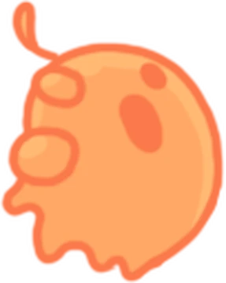
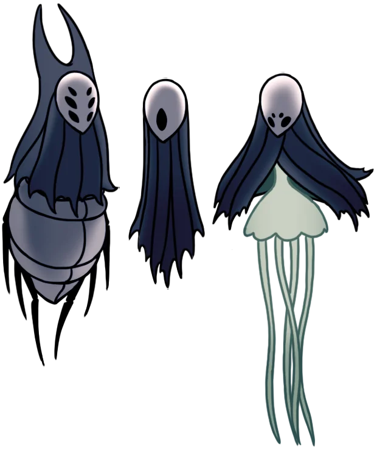

El Origen de la Infección
La plaga que consume Hallownest no es una enfermedad común, sino una luz olvidada que grita en los sueños de los insectos. Está ligada a la Radiance, un ser primordial de luz que fue sellado por el Rey Pálido. El monarca intentó contener esta amenaza mediante rituales complejos y la creación de un receptáculo puro, el Caballero Hueco. Sin embargo, la solución no fue perfecta; una "idea inculcada" manchó la pureza del receptáculo, permitiendo que la infección se filtrara y dejara secuelas que aún hoy corrompen el reino.
LEER CRÓNICAS
Los Tres Soñadores
Para reforzar el sello que mantiene a raya a la Radiance, tres poderosos seres aceptaron entrar en un sueño eterno: Monomon la Maestra, Lurien el Vigilante y Herrah la Bestia. Sus cuerpos físicos yacen protegidos en diferentes rincones de Hallownest, actuando como cerraduras vivientes del Templo del Huevo Negro. Despertarlos es una tarea ardua pero necesaria para cualquiera que busque desafiar el destino del reino y descubrir la verdad oculta tras los sellos.
CONOCER A LOS SOÑADORES
El Destino del Reino
Las acciones del Pequeño Caballero condicionan el desenlace de esta trágica historia. Algunas rutas conducen a un sacrificio cíclico, donde el protagonista acepta su papel como nuevo contenedor de la plaga. Otras, más oscuras y difíciles, permiten acceder al corazón del sueño para erradicar la fuente del mal de una vez por todas. El juego recompensa la exploración meticulosa y la interpretación de pistas sutiles para comprender la magnitud de la historia completa.
EXPLORAR FINALES